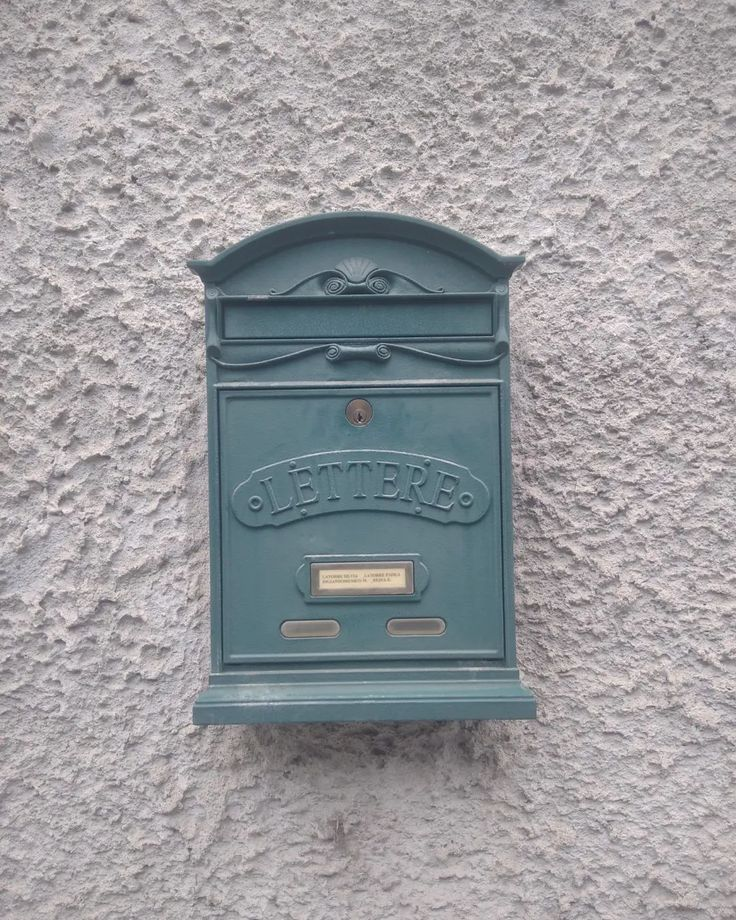
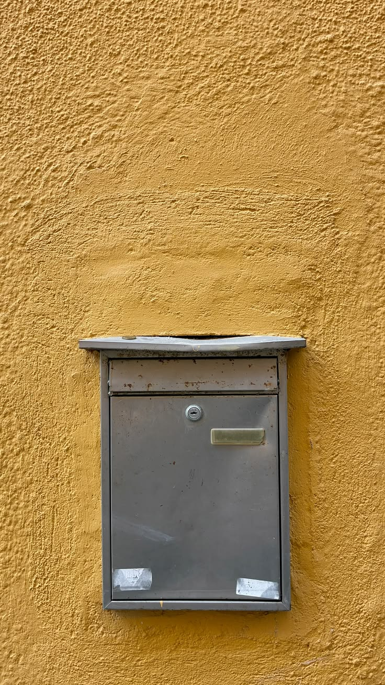
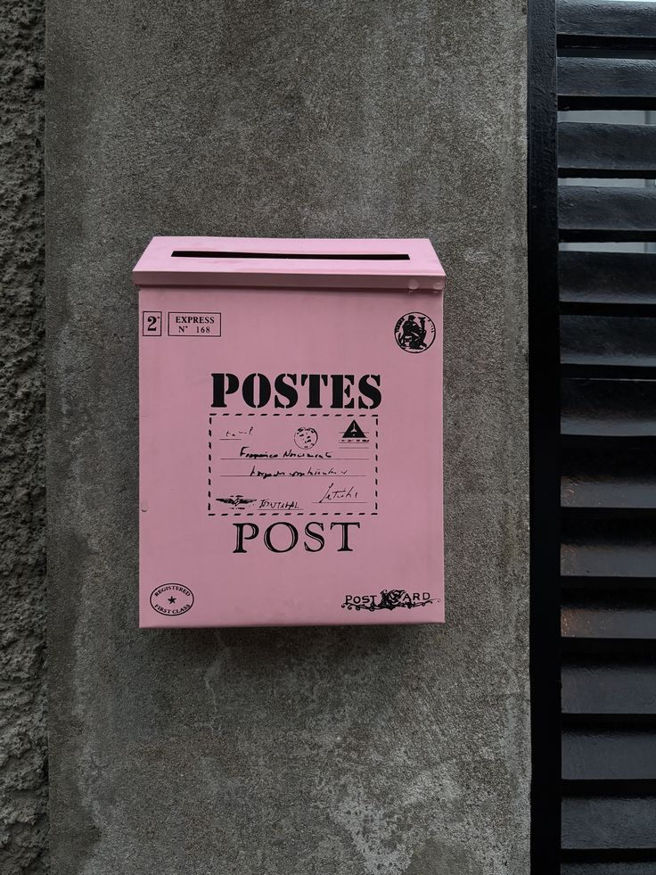
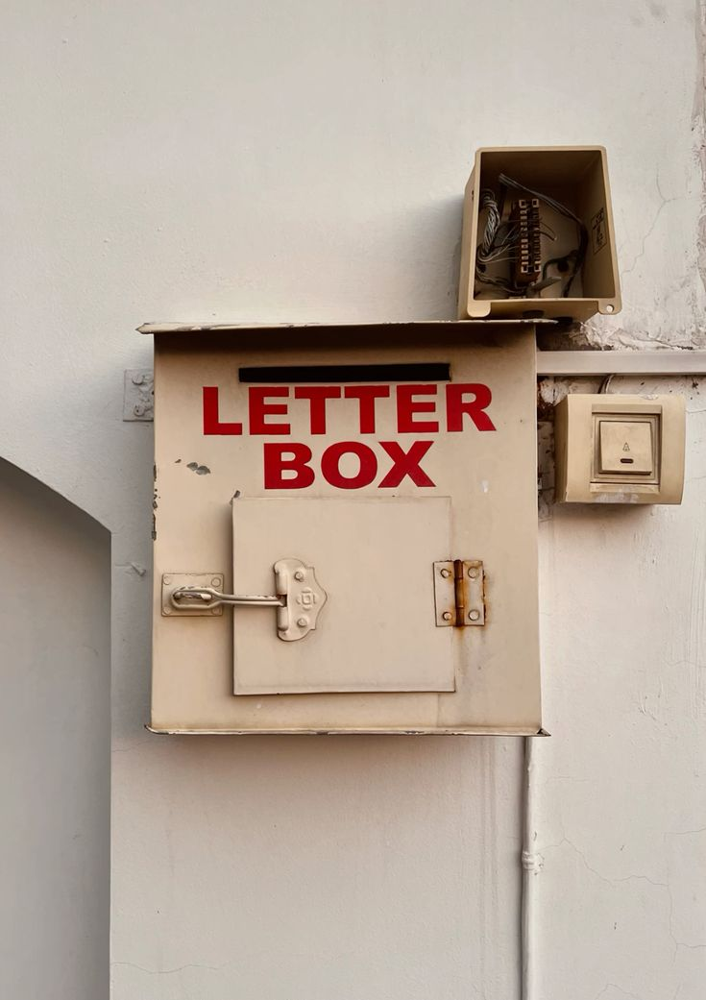
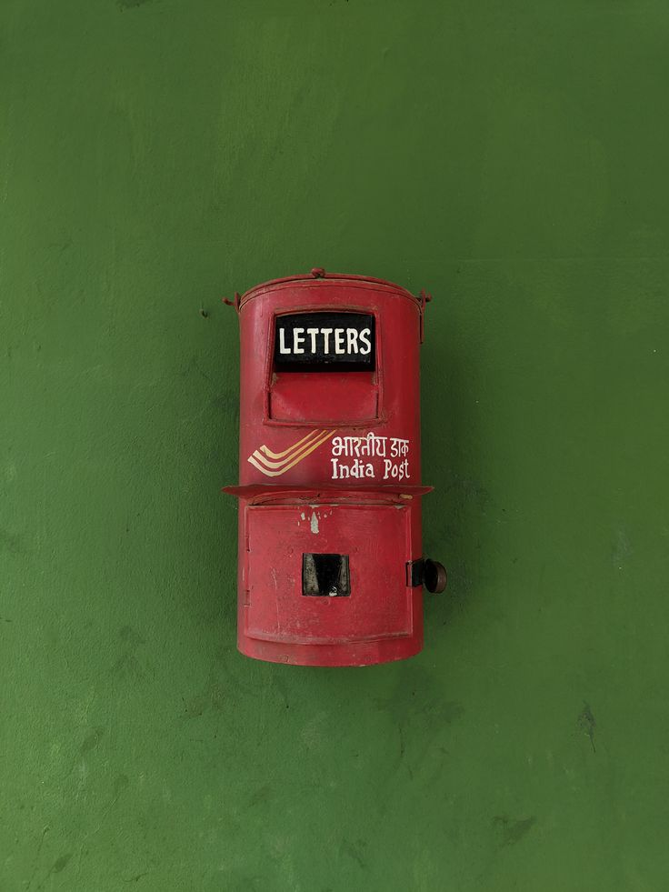

¿Qué es A11y?
a11y
/æl.aɪ/
A11y es un proyecto cuyo objetivo es ser tu buzón de denuncia o notificación de páginas webs no accesibles para todos los usuarios de internet.
Si encuentras alguna web con obstáculos en su aspecto visual o tienes dificultades para entender su contenido, haz click en nuestro buzón, registra la url correspondiente y déjanos una pequeña descripción del problema que quieras notificar.






Entre todas podemos crear una web para todas.